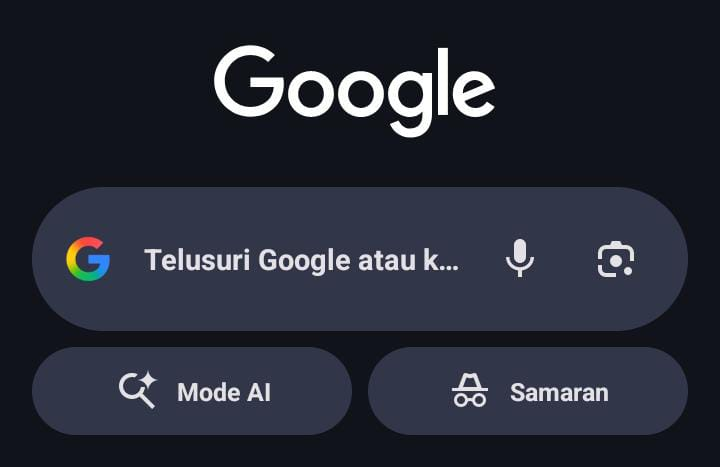

Step 1
Buka Browser & Ketik Alamat IP Router
Buka aplikasi browser (Google Chrome / Safari) di HP atau komputer Anda. Ketik angka alamat IP 192.168.100.1 di kolom pencarian atau URL bar.
Alamat IP Gateway
Router:
192.168.100.1
